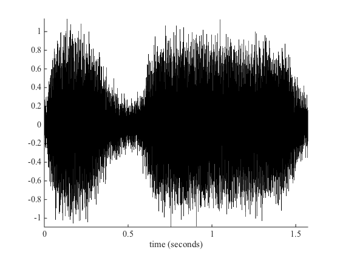
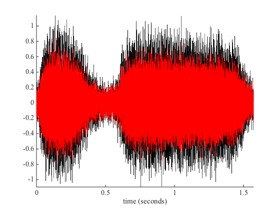
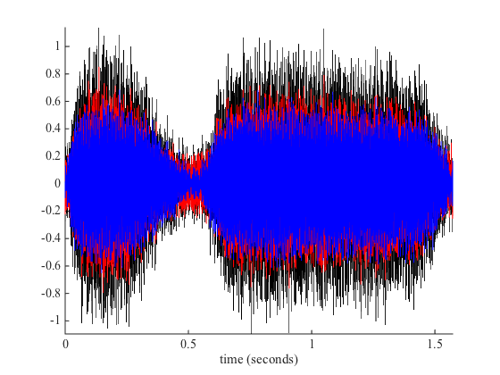
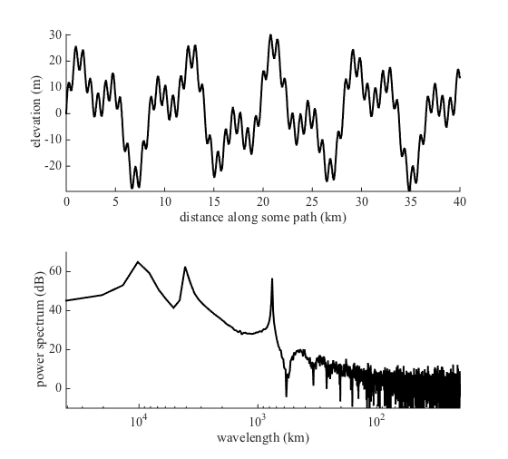
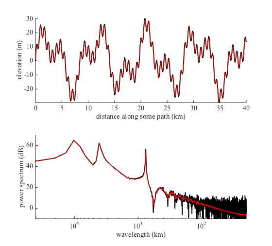
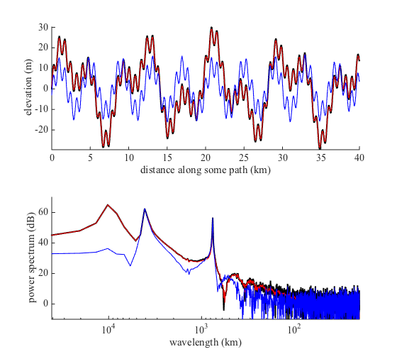
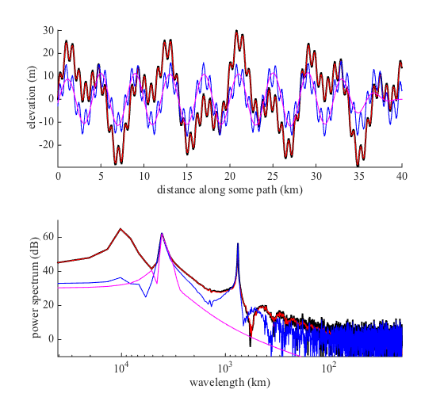
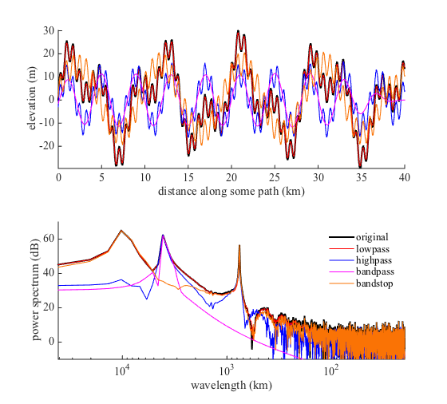

filter1 documentation
The filter1 function performs frequency or wavelength filtering on a 1D array using zero-phase Butterworth filtering.
Contents
Syntax
yfilt = filter1(filtertype,y,'fc',Fc) yfilt = filter1(filtertype,y,'lambdac',lambdac) yfilt = filter1(...,'fs',Fs) yfilt = filter1(...,'x',x) yfilt = filter1(...,'Ts',Ts) yfilt = filter1(...,'order',FilterOrder) [yfilt,filtb,filta] = filter1(...)
Description
yfilt = filter1(filtertype,y,'fc',Fc) filters 1D signal y using a specified filtertype and cutoff frequency Fc. For high-pass or low-pass filters Fc must be a scalar. For band- pass and band-stop filters Fc must be a two-element array. The filtertype can be
- 'hp' high-pass with scalar cutoff frequency Fc
- 'lp' low-pass with scalar cutoff frequency Fc
- 'bp' band-pass with two-element cutoff frequencies Fc
- 'bs' band-stop with two-element cutoff frequencies Fc
yfilt = filter1(filtertype,y,'lambdac',lambdac) specifies cutoff wavelength(s) rather than cutoff frequencies. This syntax assumes lambda = 1/f.
yfilt = filter1(...,'fs',Fs) specifies a sampling frequency Fs. If neither 'fs', 'x', nor 'Ts' are specified, Fs = 1 is assumed.
yfilt = filter1(...,'x',x) specifies a vector of monotonically- increasing, equally-spaced sampling times or x locations corresponding to y, which is used to determine sampling frequency. If neither 'fs', 'x', nor 'Ts' are specified, Fs = 1 is assumed.
yfilt = filter1(...,'Ts',Ts) specifies a sampling period or sampling distance such that Fs = 1/Ts. If neither 'fs', 'x', nor 'Ts' are specified, Fs = 1 is assumed.
yfilt = filter1(...,'order',FilterOrder) specifies the order (sometimes called rolloff) of the Butterworth filter. If unspecified, FilterOrder = 1 is assumed.
[yfilt,filtb,filta] = filter1(...) also returns the filter numerator filta and denominator filtb.
Example 1: Train Whistle
For this example we'll use the built-in train whistle example file and we'll add a little gaussian random noise to make things interesting.
load train
y = y+0.1*randn(size(y));
The original signal can be plotted in black like this. First we have to build a time vector from the sampling frequency Fs:
t = (0:length(y)-1)/Fs; plot(t,y,'k-','linewidth',1) box off; axis tight xlabel 'time (seconds)' hold on
If you have speakers you can listen to the train whistle like this:
soundsc(y,Fs)
High-pass filter the train whistle, keeping only frequencies above 750 Hz:
yhp = filter1('hp',y,'fs',Fs,'fc',750);
Plot the high-pass-filtered version of the train whistle in red on top of the original black signal:
hold on plot(t,yhp,'r')
Or perhaps you want to low-pass filter the original signal to eliminate frequencies below 1100 Hz. Note: Above we specified a sampling frequency by setting an 'fs' value. You may alternatively define a vector as the independent variable 'x'. In this case the independent variable is time, but for spatial filtering it would likely be cumulative distance along some path.
The three primary frequencies of the train whistle are spaced somewhat close together in frequency space, so the default first-order butterworth filter we used above will not eliminate all of the energy below 750 Hz. You may wish to use a steeper rolloff by specifing 'order',5. We'll plot the low-pass filtered train whistle in blue.
ylp = filter1('lp',y,'x',t,'fc',1100,'order',5); plot(t,ylp,'b')
Use plotpsd (available on file exchange website) to compare:
figure plotpsd(y,Fs,'k','linewidth',2) hold on plotpsd(yhp,Fs,'r') plotpsd(ylp,Fs,'b') xlabel 'frequency (Hz)' axis([600 1300 0 0.02]) legend('original signal','highpass 800 Hz',... 'lowpass 1100 Hz','location','northwest') legend boxoff

clear variables close all
Example 2: Topographic Profile
Suppose you have a topographic profile with elevation measurements every 10 meters for 40 kilometers. And let's say the profile has three dominant wavelengths--761 m, 4 km, and 9.4 meters. The profile might look like this. As in Example 1, I'm using plotpsd to plot a periodogram.
SpatialRes = 10; % Samples every 10 m x = 0:SpatialRes:40e3; % Domain 0 to 40 km lambda1 = 761; % 761 meters lambda2 = 4000; % 4 kilometers lambda3 = 3000*pi; % ~9.4 kilometers % Generate profile: y = rand(size(x)) + 5*sin(2*pi*x/lambda1) + ... 11*sin(2*pi*x/lambda2) + 15*sin(2*pi*x/lambda3) ; % Plot profile: figure('position',[100 100 560 506]) subplot(211) plot(x/1000,y,'k','linewidth',2) hold on xlabel 'distance along some path (km)' ylabel 'elevation (m)' box off axis tight % Plot power spectrum: subplot(212) plotpsd(y,x,'k','linewidth',2,'db','log','lambda') hold on xlabel 'wavelength (km)' ylabel 'power spectrum (dB)' axis tight ylim([-10 70])
Above you can see the three primary wavelengths as three peaks in the periodogram.
Perhaps you want to elimiate the high-frequency random noise we added to the topography with rand. To do that, you can lowpass filter out all wavelenths shorter than 300 m:
ylo = filter1('lp',y,'x',x,'lambdac',300); subplot(211) plot(x/1000,ylo,'r') subplot(212) plotpsd(ylo,x,'r','db','log','lambda')
Above, when we lowpass filtered the topography we specified an array x as the path distance corresponding to y. Alternatively, we could have specified spatial resolution which is our sampling distance 'Ts' to achieve the same result. Below we highpass filter the original topography to remove wavelengths longer than 6 km. Use a tight rolloff by specifying a 5th order butterworth filter.
yhi = filter1('hp',y,'Ts',SpatialRes,'lambdac',6000,'order',5); subplot(211) plot(x/1000,yhi,'b') subplot(212) plotpsd(yhi,x,'b','db','log','lambda')
Perhaps you want to remove high-frequency noise and the low frequencies. You can do that by filtering the signal twice, or with a bandpass filter. We can retain only that middle peak in the power spectrum by bandpass filtering out all wavelengths shorter than 3000 meters or longer than
ybp = filter1('bp',y,'x',x,'lambdac',[3000 5000],'order',3); subplot(211) plot(x/1000,ybp,'m') subplot(212) plotpsd(ybp,x,'m','db','log','lambda')
Perhaps you want to remove only a range of frequencies. You can do that by subtracting a bandpassed signal from the original signal a la:
ybs = y - ybp;
or you can create a bandstop filter directly with using the same syntax as we did with the bandpass filter:
ybs = filter1('bs',y,'x',x,'lambdac',[3000 5000],'order',3); subplot(211) plot(x/1000,ybs,'color',[.98 .45 .02]) subplot(212) plotpsd(ybs,x,'color',[.98 .45 .02],'db','log','lambda') legend('original','lowpass','highpass',... 'bandpass','bandstop','location','northeast') legend boxoff
Author Info
The filter1 function was written by Chad A. Greene of the University of Texas at Austin's Institute for Geophysics (UTIG), October 2015.